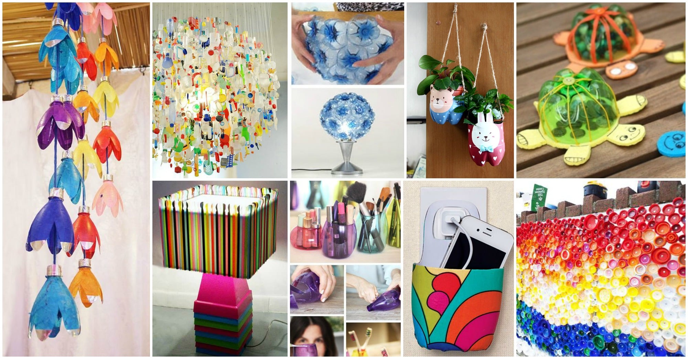
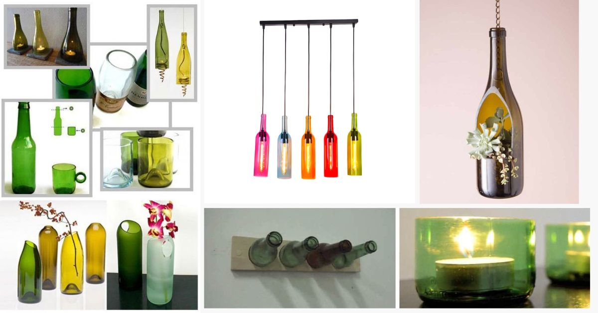
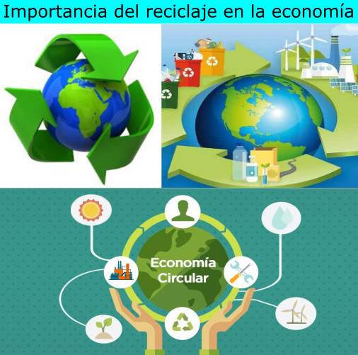
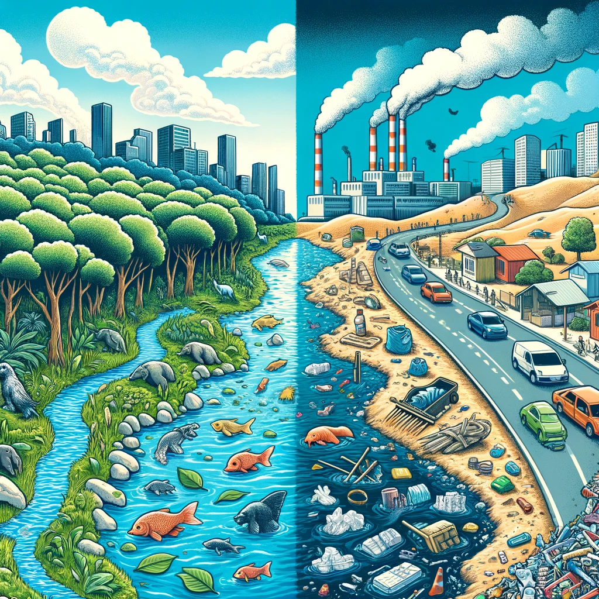

El reciclaje es el proceso mediante el cual se convierten los residuos en nuevos productos o en materia prima para su posterior utilización. Implica la recolección, clasificación y procesamiento de materiales como papel, vidrio, plásticos y metales.
Existen varios tipos de reciclaje que se aplican a distintos materiales. Aquí te mostramos algunos ejemplos:
El plástico es uno de los materiales más problemáticos para el medio ambiente, pero puede reciclarse y reutilizarse en nuevos productos como ropa, muebles y más.
El vidrio puede reciclarse infinitamente sin perder calidad. Se utiliza para fabricar nuevos envases, frascos y más productos de vidrio.
El reciclaje tiene múltiples beneficios tanto para el medio ambiente como para la economía. Algunos de estos beneficios incluyen:
Además de los beneficios ecológicos, el reciclaje también genera un impacto positivo en la economía local y global.
Reciclar ayuda a reducir la contaminación del aire, agua y suelo, mejorando la salud ambiental de nuestro planeta.
